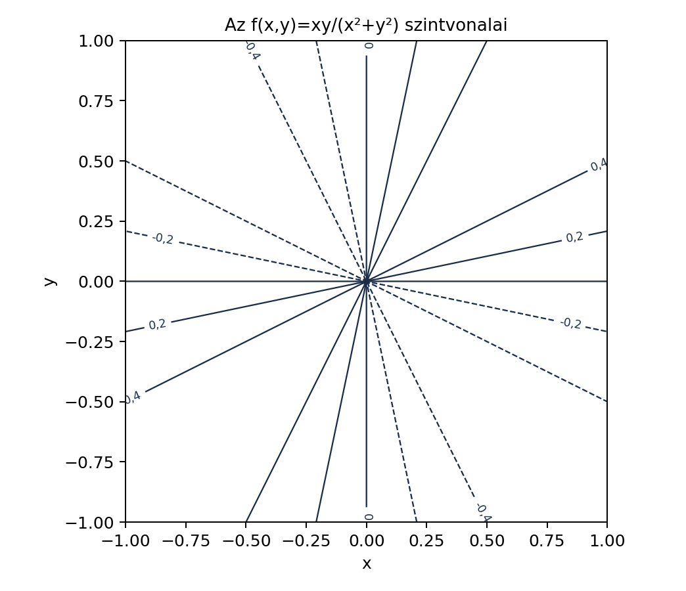

Az egyváltozós analízisben a határérték és a folytonosság mögött egy
egyszerű kép áll: az
tengelyen közelítünk egy ponthoz. Többváltozós függvényeknél azonban a
síkban vagy a térben végtelen sok irányból és útvonalon
közelíthetünk egy ponthoz. Ez alapvetően új jelenségeket okoz:
előfordulhat, hogy egy függvény minden origón átmenő egyenes mentén
ugyanahhoz az értékhez tart, a kétváltozós határértéke mégsem létezik,
mert például egy parabola mentén más a határérték. Ebben az alfejezetben
pontosan definiáljuk a többváltozós határértéket és folytonosságot,
bevezetjük a szükséges halmaztípusokat, és megvizsgáljuk, mit jelent a
folytonosság egy fémlap hőmérsékleteloszlásán.
21.3.2 Szemléletes kép
Tekintsük az
függvényt, amely az origó kivételével mindenütt értelmezett.
Polárkoordinátákkal
,
,
így
A függvény értéke tehát nem függ
-től,
csak az iránytól. Az origóhoz közeledve minden félegyenes mentén
állandó, de az iránytól függő értéket kapunk
():
az
-tengely
mentén
,
ezért a határérték
,
a
-os
egyenes mentén viszont
.
A függvénynek ezért nem lehet határértéke az origóban.

Az f(x,y)=xy/(x²+y²) szintvonalai - A
szintvonalak az origóból induló félegyenesek; a függvényérték csak az
iránytól függ, az origó kivételével.
A szintvonalas ábra is mutatja: a szintvonalak az origóból induló
félegyenesek, tehát ahogy az origóhoz közelítünk, a függvény értéke az
iránytól függ, nem a távolságtól. Ez a kép vezérli az egész
alfejezetet.
21.3.3 Távolság, környezet és
halmaztípusok
A többváltozós analízisben a „közelség” fogalma az euklideszi
távolságon alapul.
Definíció. Az
vektor normája (euklideszi hossza)
Két pont távolsága
Az
pont körüli
sugarú gömbi környezet (nyílt gömb)
-ben
a gömbi környezet egy nyílt körlap,
-ban
egy nyílt gömb. A környezet segítségével definiálhatjuk a halmazok
típusait.
Definíció. Legyen
.
Az
pont belső pontja
-nak,
ha van olyan
,
hogy
.
Az
halmaz nyílt, ha minden pontja belső pont.
Az
pont határpontja
-nak,
ha
minden
környezete tartalmaz
-beli
és
-n
kívüli pontot is.
Az
halmaz zárt, ha minden határpontját tartalmazza.
Az
halmaz korlátos, ha létezik
,
hogy
.
Az
halmaz kompakt, ha korlátos és zárt.
Az
pont torlódási pontja
-nak,
ha minden
környezete tartalmaz
-tól
különböző
-beli
pontot.
Megjegyzés. Az utolsó definíció
-ben
ekvivalens a topologikus kompaktsággal (minden nyílt lefedésből
kiválasztható véges lefedés); ez a Heine–Borel-tétel. Az általános
topológia tárgyalása kívül esik ezen a könyvön, ezért a továbbiakban a
kompakt halmazt a korlátos és zárt halmazként használjuk.
Példa. A
halmaz nyílt, mert minden
pontja köré rajzolható egy
sugarú, a halmazban fekvő nyílt körlap. Határpontjai az
kör pontjai, amelyek nincsenek benne a halmazban, ezért
nem zárt. A zárt gömb
zárt, mert a határkört is tartalmazza, és korlátos is, tehát kompakt.
Az
téglalap viszont sem nem nyílt, sem nem zárt: az
oldal pontjai határpontok, de benne vannak, az
oldal pontjai határpontok, de nincsenek benne.
A többváltozós határérték sorozatos jellemzéséhez szükségünk van a
vektorsorozatok konvergenciájára.
Definíció. Az
sorozat
-ben
konvergens, ha létezik
,
hogy
Ekkor
a sorozat határértéke.
Tétel (koordinátánkénti konvergencia). Legyen
és
.
Ekkor
Bizonyítás. Ha
,
akkor minden
-re
így
.
Megfordítva, tegyük fel, hogy minden koordinátasorozat konvergens.
Legyen
.
Minden
-hez
van
,
hogy
esetén
Legyen
.
Ha
,
akkor
Ezzel a konvergenciát beláttuk. ∎
Tétel (Bolzano–Weierstrass
-ben).
Minden korlátos
sorozatnak van konvergens részsorozata.
Bizonyítási vázlat. Ha
korlátos, akkor minden koordinátasorozata korlátos valós sorozat. Az
egydimenziós Bolzano–Weierstrass-tétel szerint az első
koordinátasorozatnak van konvergens részsorozata. Ezt a részsorozatot
tovább ritkítva a második koordináta is konvergenssé tehető, majd a
harmadik, és így tovább. Véges sok lépés után olyan részsorozatot
kapunk, amelynek minden koordinátája konvergens, tehát a
koordinátánkénti konvergencia tétele szerint maga a vektorsorozat is
konvergens. ∎
21.3.5 Kétváltozós határérték
A határérték definíciója formailag ugyanaz, mint egyváltozóban, csak
a távolságot a norma méri.
Definíció. Legyen
,
,
és legyen
a
torlódási pontja (azaz
minden környezetében van
-tól
különböző
-beli
pont). Azt mondjuk, hogy az
függvény határértéke az
pontban
,
ha minden
-hoz
létezik
,
hogy
Jelölése:
A
feltétel azt fejezi ki, hogy a függvény értéke az
pontban nem számít, csak az
-hoz
közeli, de attól különböző pontok.
Példa (polárkoordinátás becslés). Mutassuk meg,
hogy
Térjünk át polárkoordinátákra:
,
,
ahol
.
Ekkor
Adott
esetén válasszuk a
értéket. Ha
,
akkor
Tehát a határérték valóban
.
Példa (irányfüggő határérték). Vizsgáljuk az
függvényt az origóban. Az
egyenes mentén
Az
esetén a határérték
,
az
esetén
.
Mivel két különböző irányból más-más értékhez tart a függvény, a
kétváltozós határérték nem létezik. Polárkoordinátákkal ugyanez:
,
tehát az érték az iránytól függ.
Példa (parabola mentén). Tekintsük az
függvényt. Ha az
egyenes mentén közelítünk az origóhoz, akkor
Minden origón átmenő egyenes mentén tehát a határérték
.
Mégis, ha az
parabola mentén közelítünk, akkor
Ezért a kétváltozós határérték nem létezik. Ez a
példa arra figyelmeztet, hogy az egyenes irányok menti vizsgálat
önmagában nem elegendő a határérték létezésének bizonyításához; alkalmas
viszont a nemlét igazolására.
Az alábbi ábrán látszik, miért: a függvény szintvonalai maguk is
alakú parabolák, ezért minden egyenes az origó közelében egyre kisebb
értékű szintvonalakat metsz, az
parabola viszont végig az
szintvonalon fut.
Statikus változat (mint a PDF-ben)
Egyenesek mentén 0, parabolán 1/2: az
szintvonalai és az út menti értékek
Továbbvitt eredmény. Az irányfüggő határértékek ezen
gondolata visszatér a Parciális deriváltak és a
Totális derivált, érintősík és linearizálás
alfejezetben: az, hogy bizonyos irányokból létezik a határérték, még nem
garantálja sem a folytonosságot, sem a többváltozós
differenciálhatóságot.
21.3.6 Folytonosság
Definíció. Az
függvény folytonos az
pontban, ha
azaz minden
-hoz
van
,
hogy
A függvény folytonos a
halmazon, ha minden pontjában folytonos.
Az egyváltozós esethez hasonlóan itt is érvényes a sorozatos
jellemzés:
pontosan akkor folytonos
-ban,
ha minden
sorozatra
.
A folytonosság megőrződik a szokásos műveletekkel:
Állítás. Ha
folytonosak
-ban,
akkor
,
,
is folytonos
-ban;
ha
,
akkor
is folytonos
-ban.
Ha
folytonos
-ban
és
folytonos
-ban,
akkor
is folytonos
-ban.
Példa. Az
függvény mindenütt folytonos, mert polinom. Az
függvény mindenütt folytonos, mert a
leképezés és a
függvény kompozíciója. Az
függvény az origó kivételével folytonos, az origóban pedig nem tehető
folytonossá semmilyen függvényérték megadásával, mert nem létezik a
határérték.
A folytonosság kompakt halmazon különösen erős tulajdonságokkal
jár.
Tétel (Weierstrass-tétel
-ben).
Legyen
nemüres kompakt halmaz, és legyen
folytonos. Ekkor
korlátos, és felveszi maximumát és minimumát: léteznek
,
hogy
Bizonyítási terv. Először a
Bolzano–Weierstrass-tétel és a folytonosság sorozatos jellemzésének
segítségével megmutatjuk, hogy a függvény felülről korlátos. Ezután a
szuprémumot közelítő sorozat konvergens részsorozatának határértékével
igazoljuk a maximum felvételét.
Bizonyítás. Tegyük fel, hogy
felülről nem korlátos. Ekkor minden
-hez
van
,
hogy
Mivel
korlátos, az
sorozat korlátos, így a Bolzano–Weierstrass-tétel szerint van konvergens
részsorozata:
.
Mivel
zárt,
.
A folytonosság sorozatos jellemzése miatt
Ugyanakkor
,
ami ellentmond annak, hogy a sorozat véges határértékhez tart. Ezért
felülről korlátos. Hasonlóan látható, hogy alulról is korlátos.
Legyen
,
ami az előzőek szerint véges. A szuprémum tulajdonsága miatt minden
-hoz
van
,
hogy
Az
korlátos sorozatból ismét kiválaszthatunk konvergens részsorozatot:
.
A folytonosság miatt
A választás miatt ugyanakkor
,
így a határérték egyértelműsége alapján
.
Tehát
felveszi a maximumát. A minimumra ugyanezt az érvelést alkalmazzuk a
függvényre. ∎
Ellenpélda a feltételre. A
nyílt egységnégyzet nem kompakt, mert nem zárt. Az
függvény folytonos rajta, korlátos is, de sem maximumát, sem minimumát
nem veszi fel: értékkészlete a
nyílt intervallum.
Ha a függvény elemi műveletekből épül fel, és az adott pontban
értelmezett, akkor a határérték általában a behelyettesített érték.
Ha a behelyettesítés
alakú, vizsgáljunk először néhány origón átmenő egyenest
(,
).
Ha találunk két különböző határértéket, a határérték nem létezik.
Ha az egyenesek mentén mindenütt ugyanaz az érték, még ne jelentsük
ki, hogy létezik a határérték. Vizsgáljunk parabolákat is, például
vagy
.
Ha a határértéket bizonyítani akarjuk, térjünk át
polárkoordinátákra, és keressünk olyan
becslést, amely független a
szögtől:
Adott
-hoz
ezután
-t
a
feltételből választunk.
Ellenőrizzük az eredményt: ha a becslés
esetén
-hoz
tart, és a szögtől valóban független, akkor a bizonyítás helyes.
21.3.8 Valós életbeli
alkalmazás
Hőmérséklet-eloszlás egy fémlapon
Tegyük fel, hogy egy 1 m átmérőjű, kör alakú fémlap peremén a
hőmérsékletet
-on
tartják, a lap közepén pedig egy fűtőszál
-ra
melegíti azt. A stacionárius hőmérsékleteloszlást egy egyszerű,
kerekített modell írja le:
ahol
(a lap középpontja
,
sugara
méter), a hőmérséklet mértékegysége
.
A modell a lap közepén
,
a peremen
(
m) pedig
hőmérsékletet ad, és a függvény folytonos.
A folytonosság gyakorlati jelentése az, hogy kis helyváltozás csak
kis hőmérséklet-változást okoz. Mutassuk meg ezt az
–
nyelvén. Legyen
,
és legyen az előírt pontosság
.
Ekkor
Ha
,
akkor
és
,
ezért
Azt szeretnénk, hogy ez kisebb legyen
-nél:
Tehát ha a mérési pont a középponttól körülbelül
-en
belül van, a hőmérséklet
-hoz
képest legfeljebb
-kal
tér el. A modell korlátja, hogy a valódi hővezetés nem pontosan
kvadratikus profil, de a folytonosság — vagyis a kis bemenő változásra
adott kis kimenő változás — a fizikai modellek alapkövetelménye.
21.3.9 Tipikus hibák
Csak egyenesek mentén vizsgál a tanuló, és létező
határértékre következtet. Az
függvény minden
egyenes mentén
-hoz
tart, mégis a parabola mentén
a határérték, így a kétváltozós határérték nem létezik.
A nyílt és a zárt halmaz fogalmát keveri. A „nem
nyílt” nem jelenti azt, hogy zárt. Az
halmaz sem nem nyílt, sem nem zárt. A zárt halmaz definíciója az, hogy
tartalmazza minden határpontját, nem pedig az, hogy „van benne
széle”.
A korlátosságot a zártsággal keveri. A
intervallum zárt, de nem korlátos, ezért nem kompakt. A
Weierstrass-tételhez mindkét feltételre szükség van.
A határérték definíciójában elfeledkezik a
feltételről. A határérték vizsgálatakor a függvény értéke az
pontban nem számít. Ha például az
függvényt az origóban mesterségesen
-nek
definiáljuk, a határérték attól még nem létezik.
A Weierstrass-tétel feltételeit nem ellenőrzi. Az
függvény a nyílt
négyzeten folytonos és korlátos, de nem veszi fel sem a maximumát, sem a
minimumát, mert a halmaz nem zárt.
21.3.10 Önellenőrzés
Igaz-e, hogy ha egy kétváltozós függvénynek minden origón átmenő
egyenes mentén ugyanaz a határértéke, akkor létezik a kétváltozós
határértéke?
Adja meg az
halmaz határpontjainak halmazát.
Igaz-e, hogy ha
folytonos egy kompakt
halmazon, akkor
korlátos?
Konvergens-e a
sorozat?
Számítsa ki polárkoordinátás becsléssel:
Igaz-e, hogy ha
folytonos a nyílt
halmazon és korlátos, akkor felveszi a maximumát?
21.3.11 Feladatok
1. feladat (A). Határozza meg az
sorozat határértékét
-ben.
2. feladat (A). Polárkoordinátás becsléssel
bizonyítsa, hogy
3. feladat (B). Mutassa meg, hogy
nem létezik.
4. feladat (B). Vizsgálja az
függvény folytonosságát az origóban.
5. feladat (C). Az
–
definíció segítségével bizonyítsa be, hogy ha
folytonosak az
pontban, akkor
is folytonos
-ban.
6. feladat (D). Egy fémlap hőmérsékletmodellje
ahol
a
középpontú,
m sugarú körlapon van (méterben). Legyen
,
amely a középponttól
m-re, tehát a lapon van. Határozzon meg olyan
-t,
amelyre
esetén
Útmutatás: használja, hogy
,
ha
.
21.3.12 Megoldások
21.3.12.1 Önellenőrzés –
válaszok
Hamis. A parabola menti eltérés is előfordulhat;
lásd a
példát.
Az egységkör:
.
Igaz. Ez a Weierstrass-tétel része.
Nem. Az első koordináta
-hoz
tart, a második koordináta viszont nem konvergens.
Polárkoordinátákkal
,
ezért a határérték
.
Hamis. Például
a
-en
korlátos, de nem veszi fel se maximumát, se minimumát.
21.3.12.2 1. feladat megoldása
Az első koordináta
.
A második koordináta a nevezetes
határérték, amit a Monoton korlátos sorozatok és az
e szám alfejezet bizonyít. A koordinátánkénti konvergencia tétele
szerint
21.3.12.3 2. feladat megoldása
Legyen
,
.
Ekkor
Adott
-hoz
válasszuk
-t.
Ha
,
akkor
Ezért a határérték
.
21.3.12.4 3. feladat megoldása
Először vizsgáljuk az origón átmenő
egyeneseket:
Minden egyenes mentén
a határérték. Az
parabola mentén viszont
Mivel a két út mentén kapott
határértékek különbözők, a kétváltozós határérték nem létezik.
21.3.12.5 4. feladat megoldása
Az
-tengely
mentén
,
ezért
ha
.
Az
-tengely
mentén
,
ezért
ha
.
Két különböző irányból más a határérték, így a függvénynek nincs
határértéke az origóban, ezért nem folytonos ott. Az origón kívül a
függvény folytonos, mert folytonos függvények hányadosa.
21.3.12.6 5. feladat megoldása
Legyen
.
Mivel
folytonos
-ban,
van
,
hogy ha
,
akkor
Hasonlóan,
folytonossága miatt van
,
hogy ha
,
akkor
Legyen
.
Ha
,
akkor
Tehát
folytonos
-ban.
21.3.12.7 6. feladat megoldása
Számítsuk ki a megadott függvény megváltozását:
A háromszög-egyenlőtlenséggel:
Az útmutatás szerint
mert
,
így
.
Hasonlóan
Ezért
Tudjuk, hogy
és
,
tehát
Ahhoz, hogy ez kisebb legyen
-nél,
elég, ha
Tehát
jó választás. Ez az érték kicsi, mert az előírt pontosság szigorú
(),
és a
becslés az egész lapra érvényes, durva korlát. A
nem a „legnagyobb” megengedhető érték, csak egy biztosan jó választás:
az
pontbeli tényleges meredekség
()
alapján
,
kb.
mm is megfelelne (a későbbi Iránymenti derivált és
gradiens alfejezet eszközeivel). A folytonosság lényege, hogy ilyen
mindig létezik.
21.3.13 Rövid összefoglaló
A többváltozós analízisben a távolságot az euklideszi norma, a
környezetet a nyílt gömb adja. Egy
halmaz nyílt, ha minden pontja belső pont; zárt, ha tartalmazza minden
határpontját; korlátos, ha belefér egy elég nagy gömbi környezetbe. A
kompakt halmaz
-ben
éppen a korlátos és zárt halmaz.
Az
-beli
sorozat akkor és csak akkor konvergens, ha minden koordinátasorozata
konvergens, és minden korlátos vektorsorozatnak van konvergens
részsorozata (Bolzano–Weierstrass-tétel).
Az
függvény határértéke az
pontban akkor
,
ha minden
-hoz
van
,
hogy
esetén
.
A határérték nemlétét leggyakrabban irányfüggő közelítéssel igazoljuk;
az egyenes irányok vizsgálata azonban nem elegendő a létezés
bizonyításához, mert parabolák mentén is eltérő határérték adódhat.
Létező határértéket polárkoordinátás, szögtől független becsléssel
bizonyíthatunk.
Az
függvény folytonos
-ban,
ha
.
A folytonosság megőrződik összeadás, szorzás, osztás és kompozíció
esetén. Kompakt halmazon folytonos függvény korlátos, és felveszi
maximumát és minimumát (Weierstrass-tétel).
A tárgyalt eredmények (koordinátánkénti konvergencia,
Bolzano–Weierstrass-tétel, többváltozós Weierstrass-tétel,
Heine–Borel-tétel) klasszikus, standard analízis-anyagok, például
Laczkovich–T. Sós, Apostol vagy Marsden–Tromba tankönyveiben. Ebben az
alfejezetben nem hivatkozom konkrét oldalszámra, mert a forrásokat nem
ellenőriztem oldalszinten; a matematikai tartalom ellenőrzése a
levezetések és példák lépésről lépésre történő végigszámolásával
történt.